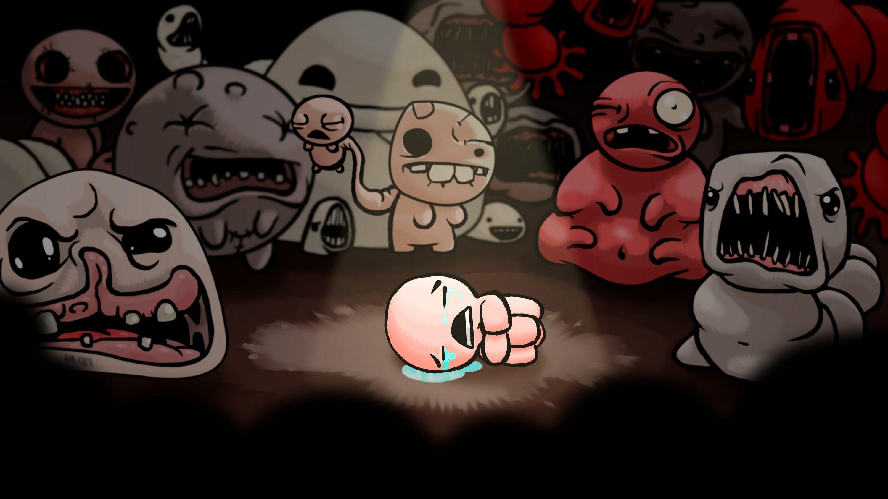

The binding of isaac

- presentation
- événement
- actualité
- galleries
- fanwiki
- réseaux/Contact
Sommaire :
Présentation
isaac est à l'origine un jeu flash créé par Edmund McMillen et Florian Himsl , Distribuer via la plateforme steam en 2011.
Il est catégorisé dans les tags "action et roguelike","indépendant","2D" tirant ses inspirations des premiers zelda. Par la suite une réadaptation de The Binding of Isaac est sortie le 4 novembre 2014 sous le nom The Binding of Isaac: Rebirth, développée par Nicalis. Celui-ci ne tourne plus sous Flash et bénéficie de graphismes typés 16-bit.

Cliquez pour accéder à la page complète
événement
chaque année le streamer shisheyou miyamoto relance une parti de 0 avec des règles qui vont le challenger et influencer sa manière de jouer. *VOD de shisheyou qui joue encore et toujours sur isaac :
galleries :
Fan wiki (attention spoiler)